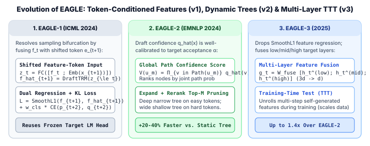

2. EAGLE, EAGLE-2 & EAGLE-3: Feature-Level Autoregression, Multi-Layer Fusion & Dynamic Draft Trees
Among all lossless speculative decoding methods deployed in modern serving engines (vLLM, SGLang, TensorRT-LLM), the EAGLE family (Extrapolation Algorithm for Greater Language-Model Efficiency; Li et al., ICML 2024, EMNLP 2024, 2025) consistently delivers the highest wall-clock speedups ($2.8\times\text{--}4.5\times$) with less than $1\%$ parameter overhead.
Why is extrapolating in feature space so much more accurate than either a small token-level draft model or parallel Medusa heads? And why did EAGLE-3 abandon EAGLE-1's feature-regression loss in favor of multi-layer feature fusion and Training-Time Test (TTT)? In this chapter we trace all three generations of EAGLE from first principles.

1. EAGLE-1: Why Naive Feature Autoregression Fails & How Shifted Token Conditioning Fixes It
Let $f_t \in \mathbb{R}^d$ denote the second-to-top hidden state of the target LLM (immediately before the final unembedding matrix $W_{\text{LM}} \in \mathbb{R}^{|V| \times d}$), so that target token probabilities at step $t$ are $p_{t+1} = \operatorname{softmax}(W_{\text{LM}} f_t)$.
At first glance, since sequence dynamics in continuous hidden space $(f_1, f_2, \dots, f_t)$ are much smoother and lower-dimensional than discrete token IDs in $V$, one might try to train a single-layer draft Transformer $\mathcal{G}$ to predict $\hat f_{t+1} = \mathcal{G}(f_{1:t})$ directly from past features. However, Li et al. (2024) discovered that pure feature autoregression fails catastrophically under stochastic sampling due to sampling uncertainty bifurcation:
- From feature $f_t$ (say after prompt
"I"), the target distribution $p_{t+1} = \operatorname{softmax}(W_{\text{LM}} f_t)$ might assign $0.45$ to"am"and $0.45$ to"always". - In the true target model, the next feature $f_{t+1}$ depends deterministically on which discrete token $x_{t+1}$ was actually sampled: if $x_{t+1} = \texttt{"am"}$, $f_{t+1} = f_{t+1}^{(\text{am})}$ predicts
"happy"; if $x_{t+1} = \texttt{"always"}$, $f_{t+1} = f_{t+1}^{(\text{always})}$ predicts"try". - A drafter $\mathcal{G}(f_{1:t})$ that only sees $f_t$ does not know whether
"am"or"always"was sampled! Forced to minimize regression error across both outcomes, it predicts the blurry average $\frac{1}{2}\big(f_{t+1}^{(\text{am})} + f_{t+1}^{(\text{always})}\big)$, which projects to nonsense logits when multiplied by $W_{\text{LM}}$.
The Shifted Feature + Token Fusion Rule
EAGLE-1 eliminates sampling ambiguity by feeding the draft layer the feature sequence $f_{1:t}$ paired with the 1-step-advanced token embedding sequence $e_{2:t+1} = (\operatorname{Emb}(x_2), \dots, \operatorname{Emb}(x_{t+1}))$ via a linear compression layer $W_{\text{fc}} \in \mathbb{R}^{d \times 2d}$:
Because $x_{t+1}$ has already been sampled from $\operatorname{softmax}(W_{\text{LM}} f_t)$ before we need to predict $\hat f_{t+1}$, conditioning on $\operatorname{Emb}(x_{t+1})$ incurs zero latency delay and tells the draft layer the exact branch taken!
EAGLE-1 Training Objective & Feature Noise Augmentation
During multi-step drafting, the draft model feeds its own predicted features $\hat f_{t+1}$ back as input at step $t+2$. To prevent compounding exposure bias without unrolling expensive multi-step gradients in EAGLE-1, uniform noise $\epsilon \sim \mathcal{U}(-0.1, 0.1)$ is added to training inputs $f_t$, and the draft head minimizes a joint Smooth-$L_1$ feature loss plus token cross-entropy distillation loss ($w_{\text{cls}} = 0.1$):
2. EAGLE-2: Context-Aware Dynamic Draft Trees
EAGLE-1 and Medusa-1/2 use a static tree topology (e.g., always branching into $4$ children at depth $1$, $2$ children at depth $2$, etc.) regardless of whether the current context is deterministic boilerplate code or high-entropy creative text.
In EAGLE-2 (Li et al., EMNLP 2024), the authors observed empirically that the EAGLE draft head's token probability $\hat q(x_i)$ is strongly calibrated with the target model's empirical acceptance probability $\alpha(x_i)$ (Pearson correlation $r > 0.85$). Moreover, a candidate node $u_m$ at depth $d$ is accepted by the target model if and only if every ancestor along its root-to-$u_m$ path is accepted.
Therefore, EAGLE-2 defines the Global Acceptance Confidence Score $V(u_m)$ of any node $u_m$ in the draft tree as the product of draft probabilities along its ancestor path $\operatorname{Path}(u_m)$:
Two-Phase Dynamic Tree Construction (Expand + Rerank)
- Expansion Phase (Depths $d = 1, \dots, D$): At each depth $d$, select the top-$k$ highest-scoring leaf nodes from depth $d-1$ (sorted by $V(u)$) and run all $k$ leaves in a single batched forward pass through the EAGLE head, expanding each into its top-$k$ token children ($k^2$ new candidates).
- Post-Expansion Reranking & Pruning: Across all expanded nodes accumulated over all $D$ depths, sort every node globally by $V(u_m)$ and keep the top-$M$ nodes (e.g., $M = 60$). Because $V(\text{parent}) \ge V(\text{child})$ always holds (since $\hat q(v) \in [0, 1]$), taking the top-$M$ nodes by $V(u_m)$ is guaranteed to form a valid connected prefix tree without orphaned nodes!
3. EAGLE-3: Dropping Feature Regression, Multi-Layer Fusion & Training-Time Test (TTT)
When scaling training datasets from $68\text{K}$ ShareGPT conversations ($1\times$) to $8\times\text{--}16\times$ larger corpora, EAGLE-3 (Li et al., 2025) uncovered a fundamental scaling bottleneck in EAGLE-1/2:
EAGLE-3 introduces two architectural breakthroughs that unlock monotonous speedup improvements as training data scales:
- Multi-Layer Feature Fusion ($3d \to d$) instead of Top-Layer Feature Regression: Instead of feeding the top-layer pre-logit vector $f_t$ (which is already heavily specialized for the immediate next token $x_{t+1}$ and discards lower-level syntactic context), EAGLE-3 extracts target hidden states from three internal depths—a low layer $h_t^{(\text{low})}$, a middle layer $h_t^{(\text{mid})}$, and a high layer $h_t^{(\text{high})}$—concatenates them into a $3d$-dimensional vector, and projects them to $d$ via $W_{\text{fuse}} \in \mathbb{R}^{d \times 3d}$:
$$g_t = W_{\text{fuse}} \Big[h_t^{(\text{low})} \;;\; h_t^{(\text{mid})} \;;\; h_t^{(\text{high})}\Big] \in \mathbb{R}^d.$$
- Training-Time Test (TTT) with Pure Token Cross-Entropy: EAGLE-3 removes the Smooth-$L_1$ feature loss completely ($\mathcal{L}_{\text{reg}} = 0$). Instead, during training itself, EAGLE-3 unrolls the draft head autoregressively for multiple steps $s = 1, 2, \dots, S$: at step $s=1$ it consumes fused target features $g_t$ and $\operatorname{Emb}(x_{t+1})$ to output draft hidden state $a_{t+1}$; at step $s=2$ it consumes its own generated state $a_{t+1}$ and $\operatorname{Emb}(\hat x_{t+2})$ to output $a_{t+2}$, and backpropagates KL/cross-entropy loss $\mathcal{L}_{\text{TTT}} = \sum_{s=1}^{S} D_{\text{KL}}\!\big(p_{t+s+1} \,\big\|\, \operatorname{softmax}(W_{\text{LM}} a_{t+s})\big)$ through the multi-step self-generated attention cache.
4. Worked Numerical Trace: EAGLE-2 Dynamic Tree Pruning ($k=2, M=5$)
Suppose at the root prefix "import", we expand a dynamic EAGLE tree with branching factor $k=2$ over $D=2$ depths and prune to budget $M=4$ total candidate nodes using $V(u) = \prod_{v \in \operatorname{Path}(u)} \hat q(v)$:
| Node ID | Depth $d$ | Candidate Path | Local Conditional $\hat q(v)$ | Global Path Score $V(u_m) = \prod \hat q$ | Rank & Keep Decision ($M=4$) |
|---|---|---|---|---|---|
| $u_1$ | $1$ | ["torch"] |
$0.80$ | $0.800$ | Rank 1 — KEEP |
| $u_2$ | $1$ | ["numpy"] |
$0.15$ | $0.150$ | Rank 3 — KEEP |
| $u_3$ (child of $u_1$) | $2$ | ["torch", ".nn"] |
$0.70$ | $0.80 \times 0.70 = \mathbf{0.560}$ | Rank 2 — KEEP |
| $u_4$ (child of $u_1$) | $2$ | ["torch", "\n"] |
$0.20$ | $0.80 \times 0.20 = \mathbf{0.160}$ | Rank 3 (tie/above $u_2$) — KEEP |
| $u_5$ (child of $u_2$) | $2$ | ["numpy", "as"] |
$0.90$ | $0.15 \times 0.90 = \mathbf{0.135}$ | Rank 5 — PRUNED ($0.135 < 0.150$) |
| $u_6$ (child of $u_2$) | $2$ | ["numpy", "\n"] |
$0.05$ | $0.15 \times 0.05 = \mathbf{0.0075}$ | Rank 6 — PRUNED |
Notice how EAGLE-2 automatically adapts tree shape to context confidence: because $u_1$ ("torch") had high initial confidence ($0.80$), both of its depth-$2$ children ($u_3, u_4$) survive into the top-$4$ verification budget, whereas $u_2$ ("numpy", $0.15$) is verified only at depth $1$ without wasting target compute on its low-prior descendants.
5. Reference PyTorch Implementation: EAGLE-3 Fused Drafter & Dynamic Tree Pruner
import torch
import torch.nn as nn
import torch.nn.functional as F
class EAGLE3DraftHead(nn.Module):
"""
EAGLE-3 Draft Head:
1. Fuses low, middle, and high target hidden states (3d -> d).
2. Concatenates current feature state with 1-step-ahead token embedding (2d -> d).
3. Runs a single lightweight causal Transformer block and reuses frozen W_LM.
"""
def __init__(self, hidden_dim: int, num_heads: int = 8):
super().__init__()
self.layer_fusion = nn.Linear(3 * hidden_dim, hidden_dim, bias=False)
self.fc_input = nn.Linear(2 * hidden_dim, hidden_dim, bias=False)
self.norm = nn.RMSNorm(hidden_dim)
self.decoder_layer = nn.TransformerEncoderLayer(
d_model=hidden_dim, nhead=num_heads, dim_feedforward=4 * hidden_dim,
batch_first=True, norm_first=True
)
def fuse_target_layers(
self, h_low: torch.Tensor, h_mid: torch.Tensor, h_high: torch.Tensor
) -> torch.Tensor:
return self.layer_fusion(torch.cat([h_low, h_mid, h_high], dim=-1))
def forward_step(
self,
feat_seq: torch.Tensor, # (B, L, d): g_t at step 1, or [g_t, a_{t+1}, ...] at step >1
shifted_tokens: torch.Tensor, # (B, L): token IDs [x_2, ..., x_{t+1}, ...]
shared_emb: nn.Embedding,
shared_lm_head: nn.Linear,
) -> tuple[torch.Tensor, torch.Tensor]:
emb = shared_emb(shifted_tokens)
z = self.fc_input(torch.cat([self.norm(feat_seq), emb], dim=-1))
L = z.size(1)
mask = nn.Transformer.generate_square_subsequent_mask(L, device=z.device)
a_out = self.decoder_layer(z, src_mask=mask, is_causal=True)
logits = shared_lm_head(a_out[:, -1, :]) # (B, V) next draft step logits
return a_out[:, -1:, :], logits
def eagle2_prune_dynamic_tree(
nodes: list[dict], max_nodes: int
) -> list[dict]:
"""
Given candidate tree nodes with 'id', 'parent_id', and 'path_prob' V(u_m),
returns the top-M nodes sorted in topological order.
Because V(parent) >= V(child), the top-M subset is always a connected prefix tree.
"""
ranked = sorted(nodes, key=lambda n: n["path_prob"], reverse=True)[:max_nodes]
kept_ids = {n["id"] for n in ranked}
assert all(n["parent_id"] is None or n["parent_id"] in kept_ids for n in ranked), (
"Monotonicity guarantees every kept node's parent is also kept!"
)
return sorted(ranked, key=lambda n: n["id"])
if __name__ == "__main__":
candidate_tree = [
{"id": 1, "parent_id": None, "tok": "torch", "path_prob": 0.800},
{"id": 2, "parent_id": None, "tok": "numpy", "path_prob": 0.150},
{"id": 3, "parent_id": 1, "tok": ".nn", "path_prob": 0.560},
{"id": 4, "parent_id": 1, "tok": "\\n", "path_prob": 0.160},
{"id": 5, "parent_id": 2, "tok": "as", "path_prob": 0.135},
{"id": 6, "parent_id": 2, "tok": "\\n", "path_prob": 0.0075},
]
pruned = eagle2_prune_dynamic_tree(candidate_tree, max_nodes=4)
print("Pruned M=4 dynamic tree nodes:", [(n["id"], n["tok"], n["path_prob"]) for n in pruned])6. Primary References
- Yuhui Li, Fangyun Wei, Chao Zhang, and Hongyang Zhang, EAGLE: Speculative Sampling Requires Rethinking Feature Uncertainty (ICML 2024).
- Yuhui Li, Fangyun Wei, Chao Zhang, and Hongyang Zhang, EAGLE-2: Faster Inference of Language Models with Dynamic Draft Trees (EMNLP 2024).
- Yuhui Li, Fangyun Wei, Chao Zhang, and Hongyang Zhang, EAGLE-3: Scaling up Inference Acceleration of Large Language Models via Training-Time Test (2025).